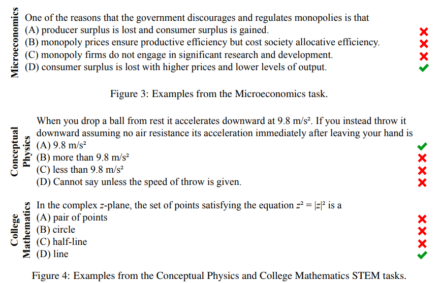
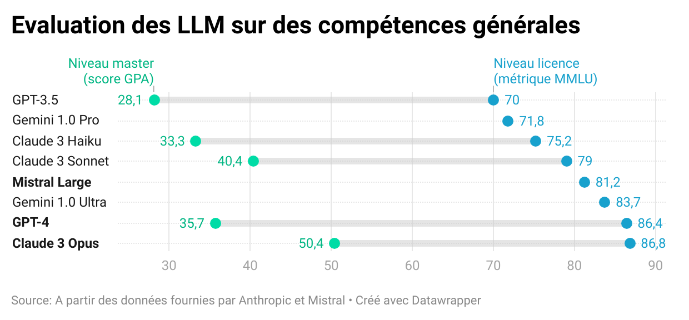
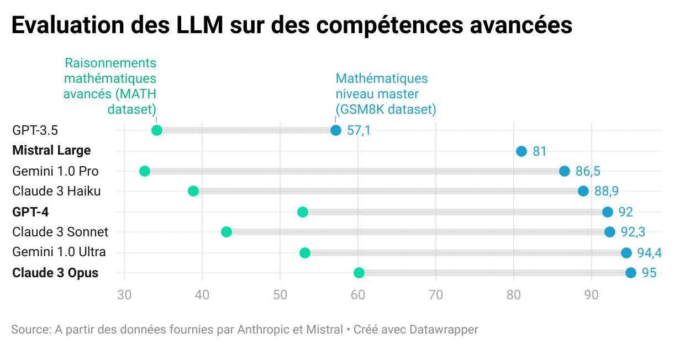

Astuce
Vous désirez intégrer la liste de diffusion ? L’inscription se fait ici.
Ce mois-ci, la première partie de la newsletter est consacrée à l’actualité dense dans le domaine des IA génératives et à l’annonce d’un nouveau générateur de site web pour les data scientists. Suivent les actualités du réseau, notamment une présentation de Quarto par Christophe Dervieux (Posit) et le replay de la présentation d’Eric Mauvière sur le sujet des bonnes pratiques de dataviz.
Sora, la nouvelle IA d’OpenAI pour générer des vidéos
Instruction utilisée par OpenAI pour générer cette vidéo
“Animated scene features a close-up of a short fluffy monster kneeling beside a melting red candle. The art style is 3D and realistic, with a focus on lighting and texture. The mood of the painting is one of wonder and curiosity, as the monster gazes at the flame with wide eyes and open mouth. Its pose and expression convey a sense of innocence and playfulness, as if it is exploring the world around it for the first time. The use of warm colors and dramatic lighting further enhances the cozy atmosphere of the image.”Après avoir révolutionné le champ de la génération d’image avec DallE (texte \(\to\) image), de la génération de textes avec ChatGPT (texte \(\to\) texte), OpenAI a rendu public les premières productions d’un modèle de génération de vidéos à partir d’instructions (texte \(\to\) vidéo). Ce produit, nommé Sora, génère des vidéos d’un réalisme qui n’avait encore jamais été atteint par les IA génératrices de vidéos. Jusqu’à présent, les modèles de ce type généraient des images dont les formes étaient grossières, la résolution d’une qualité faible et dont les mouvements étaient peu vraisemblables.
Source : Le Monde
Sora n’est pas directement mis à disposition du grand public, contrairement aux autres services d’OpenAI. Ce produit n’est partagé qu’à des utilisateurs identifiés par OpenAI comme pouvant représenter le public cible - des réalisateurs par exemple - ou ayant une expertise sur des sujets comme la désinformation, les biais, la connaissance des algorithmes de recommandation, etc. Cette diffusion restreinte vise à recevoir des retours de la part de potentiels clients ou d’experts sur les risques de ces technologies. La communication par le biais de quelques vidéos choisies par OpenAI permet, dans le même temps, de créer une attente du grand public avant la mise à disposition plus large.
Comme Dall-E, Midjourney et consorts qui généraient des mains avec trop de doigts, le réseau de neurones derrière Sora a encore des difficultés à respecter certaines règles élémentaires de vraisemblance. Par exemple, dans la vidéo ci-dessous, les événements liés à un bris de verre s’enchaînent dans un ordre incohérent.
OpenAI a déjà prévu de nombreuses applications à ce modèle. Outre la génération de vidéos à partir d’instructions verbales, Sora est capable d’animer une image, de compléter une vidéo déjà existante avec une vidéo fictionnelle, d’éditer une vidéo déjà existante pour changer des éléments… Les secteurs de la communication, de la création et de la diffusion de contenu sont concernés au premier chef mais la richesse des fonctionnalités possibles et la simplicité d’usage des produits d’OpenAI laissent penser que les applications iront bien au-delà de ces secteurs économiques ; la vidéo occupe maintenant une place prédominante sur internet et sur les réseaux sociaux pour de multiples usages.
Ce modèle soulève, comme Dall-E ou ChatGPT avant lui, des enjeux de propriété intellectuelle puisqu’il a aussi été entraîné sur des corpus massifs collectés depuis internet. Le réalisme des vidéos générées peut également laisser craindre, sans marque d’identification claire du fait que la vidéo est générée numériquement (principe du watermark), des dérives autour de la mésinformation, notamment des vidéos malveillantes et réalistes de personnes dans des situations inventées (des deepfakes) ou la prolifération de contenus choquants si les garde-fous dans la génération de contenus sont outrepassés.
NotePour en savoir plus
- La présentation de
Sorasur le site d’OpenAI ; - Un article plus technique d’OpenAI sur les fonctionnalités de Sora ;
- Les 10mn de vidéos de présentation de
Sorapar OpenAI ; - Un article du New York Times présentant
Sora - Un article sur le site The Conversation sur les enjeux pour certains secteurs économiques.
“Le Chat” : un concurrent à ChatGPT par Mistral AI 🐱
Fin février, la startup française Mistral AI a rendu public, en accès libre, une IA conversationnelle aux fonctionnalités similaires à ChatGPT nommée “Le Chat”.
Ce service utilise le grand modèle de langage (LLM) Mistral Large, dernier né des LLM multilangues entraînés par Mistral AI. Contrairement à d’autres modèles de Mistral AI, celui-ci n’est pas ouvert ; l’accès n’y est possible que par le biais des services de Mistral ou par le biais du cloud Microsoft Azure, suite à un partenariat entre l’entreprise américaine et la startup française (tarification en fonction du volume de requêtes).
Selon les évaluations réalisées fin février, avant la sortie de Claude 3 (voir plus bas 👇️), ce modèle présentait des performances supérieures à celles des modèles open source, notamment LLaMa-2, sur une série d’évaluations de la véracité des réponses proposées par une IA et sur les capacités de raisonnement de celle-ci à partir de tests standardisés. Sur des questions d’un niveau de premier cycle universitaire (métrique MMLU proposée par Hendrycks et al. (2021)), Mistral Large propose la bonne réponse dans 81% des cas, ce qui l’amène presque au niveau de GPT-4 (86%) et bien au-dessus de Llama-2 (70%), le meilleur modèle opensource à l’heure actuelle.
Classement des principaux modèles de langage lors de la sortie de Mistral Large


NotePour en savoir plus
- https://chat.mistral.ai/, l’IA conversationnelle proposée par Mistral AI ;
- Le post de blog par Mistral AI annonçant
Mistral Large; - La newsletter d’Andrew Ng consacrée à Mistral Large ;
- L’article d’Hendrycks et al. (2021) à l’origine de la métrique MMLU utilisée pour classer les modèles.
Les performances de GPT-4 dépassées pour la première fois
Quelques jours seulement après la sortie de Mistral Large, un autre modèle de langage est venu concurrencer le modèle d’OpenAI GPT-4. Ce modèle nommé Claude 3 est le premier à obtenir des performances supérieures à GPT-4 (le modèle derrière la version Pro de ChatGPT) sur les principaux tests de qualité des modèles. Ce modèle, créé par Anthropic et disponible en trois versions plus ou moins puissantes (Haiku, Sonnet et Opus), n’est pas encore disponible pour les utilisateurs résidant dans l’Union Européenne.
Les trois modèles Claude-3 disponibles

Comparaison des performances des LLM


Les modèles Claude sont développés par l’entreprise Anthropic, créée par des anciens employés d’OpenAI considérant que la problématique de la sécurité des IA n’était pas assez mise en avant par OpenAI. Valorisée autour de 18 milliards d’euros en ce début d’année 2024, elle a bénéficié de financements importants d’Amazon et de Google, ces deux entreprises ayant investi respectivement 4 et 2 milliards de dollars. Les modèles Claude sont disponibles pour les utilisateurs des cloud d’Amazon (AWS) ou de Google (GCP) à l’instar des modèles GPT disponibles aux utilisateurs du cloud de Microsoft (Azure). La concurrence entre OpenAI et Anthropic est ainsi l’occasion d’un affrontement entre les trois principaux acteurs du cloud. Au-delà de la concurrence entre leurs investisseurs, les modèles économiques d’Anthropic et d’OpenAI diffèrent. Anthropic vise plutôt à proposer des services à des entreprises accessibles par le biais d’API là où OpenAI propose plutôt des outils grands publics avec des fonctionnalités supplémentaires pour les acteurs spécialisés. Parmi les partenaires principaux d’Anthropic, on retrouve Gitlab, Quora ou Salesforce (l’éditeur de logiciel derrière Slack). A l’instar des modèles Mistral Large ou GPT-4, le modèle Claude 3 n’est pas open source.
NotePour en savoir plus
- L’annonce de Claude 3 par Anthropic ;
- Un article sur Anthropic par le New York Times et un autre par Forbes.
Observable propose un constructeur de sites statiques, pour s’abstraire des notebooks
Afin de démocratiser l’utilisation de Javascript au-delà du cercle des développeurs web, Mike Bostock, ancien responsable des dataviz du New York Times, la référence en la matière, a créé il y a quelques années Observable.
En plus d’être une extension du langage Javascript à la grammaire familière aux connaisseurs de Python et R, Observable vise à créer une communauté d’utilisateurs de Javascript à l’interface entre data scientists et développeurs web. Pour cela, le site observablehq.com se propose d’être un réseau social de notebooks en Javascript, un peu comme Github faisant office de réseau social du code. Les notebooks Observable permettent de rapidement prendre en main du code Javascript pour créer des analyses de données interactives qui peuvent ensuite être facilement partagées par le biais du site observablehq.com pour simplifier les réutilisations du code proposé ou des données sous-jacentes.
Cependant, si les notebooks sont un terrain fertile pour l’expérimentation, ils montrent rapidement leurs limites dès qu’on désire s’abstraire de l’hébergement sur observablehq.com. Pour mettre à disposition des visualisations interactives sur d’autres sites, les sites statiques sont plus simples d’usage. Historiquement, l’écosystème Javascript est construit autour d’imposants frameworks comme React, bien connus des développeurs web mais méconnus des data scientists qui sont néanmoins amenés à livrer de plus en plus d’applications interactives pour valoriser des données.
L’annonce d’Observable Framework, un constructeur de sites statiques, représente un changement d’approche. Observable Framework vise à être un framework permettant aux data scientists de construire des sites web en mélangeant des étapes de préparation de données en R, Python ou SQL (via DuckDB), du formattage de texte en Markdown et de l’interactivité grâce au langage Observable. L’approche est ainsi similaire à celle de Quarto, la référence pour les data scientists désirant construire des publications reproductibles (voir la section événements 👇️ pour en apprendre plus). Ce dernier écosystème permet déjà depuis quelques temps de compléter du travail de données en R ou Python avec des traitements en Observable pour obtenir un site web interactif sans besoin de solutions techniques complexes comme Shiny ou Streamlit.
Les évolutions à venir d’Observable Framework sont donc à surveiller, cet écosystème pouvant être amené, s’il rencontre du succès, à rentrer dans la boîte à outil standard des data scientists comme Quarto est déjà en train de le faire. Le site observablehq.com ne va pas pour autant disparaître : celui-ci restera un lieu où on peut tirer avantage de la simplicité des notebooks pour l’expérimentation ou pour la mise à disposition de tutoriels pédagogiques. Ce virage est similaire à celui pris par Python dans la communauté des data scientists où les notebooks, après avoir connu une phase hégémonique, sont revenus à leur fonction initiale : des carnets pour expérimenter servant de brouillon avant l’écriture de scripts ou alors de belles pages, mêlant texte et code, pour présenter une démarche de manière pédagogique.
NotePour en savoir plus
- L’annonce d’
Observable Framework; - L’interactivité dans
Quartogrâce aux cellulesObservable; - Le cours de “Mise en production de projets data science” de l’ENSAE où les enjeux techniques et humains de la mise à disposition de tels sites sont évoqués.
Actus du réseau
Chistophe Dervieux, “Quarto : Une évolution de R Markdown pour des travaux statistiques reproductibles” (📅 2 mai)
Pour fiabiliser la production de documents construits en valorisant des données (tableaux, graphiques, etc.), RStudio (devenu Posit depuis) a construit il y a quelques années l’écosystème R Markdown permettant de produire du document en mélangeant code et texte.
Cette problématique des publications reproductibles est devenue incontournable dans l’écosystème R et la solution R Markdown est dorénavant largement utilisée. Pour étendre les vertus de cette approche à d’autres langages, Posit a commencé à développer Quarto, un écosystème reprenant le principe de R Markdown mais étendant ces fonctionnalités à d’autres langages de programmation, notamment Python et Observable.
Le 2 mai de 15h à 16h, Christophe Dervieux (Posit) nous présentera Quarto, l’écosystème de publications reproductibles qui succède à R Markdown. Cet événement est proposé de manière hybride : par le biais de Zoom ou, pour les agents en poste à la Direction Générale de l’Insee, en salle 4-C-458.
Vos besoins de formation
L’an dernier, nous avions organisé un questionnaire pour connaître les besoins de formations des membres du réseau. Ce questionnaire est utile pour que les événements organisés dans le cadre du réseau répondent au mieux aux besoins.
Afin de connaître les attentes et centres d’intérêt en cette année 2024, nous vous proposons un nouveau questionnaire. Celui-ci est également l’occasion d’accueillir vos retours sur les masterclass menées en 2023 en collaboration avec Datascientest si vous avez participé à celles-ci.
Replay de la présentation d’Eric Mauvière “La dataviz pour donner du sens aux données et communiquer un message”

La présentation d’Eric Mauvière sur les bonnes pratiques de dataviz a rencontré un réel succès avec près de 150 participants. Le replay et les slides de cette présentation essentielle sont disponibles ci-dessous :
Les références
Hendrycks, Dan, Collin Burns, Steven Basart, Andy Zou, Mantas Mazeika, Dawn Song, et Jacob Steinhardt. 2021. « Measuring Massive Multitask Language Understanding ». https://arxiv.org/abs/2009.03300.